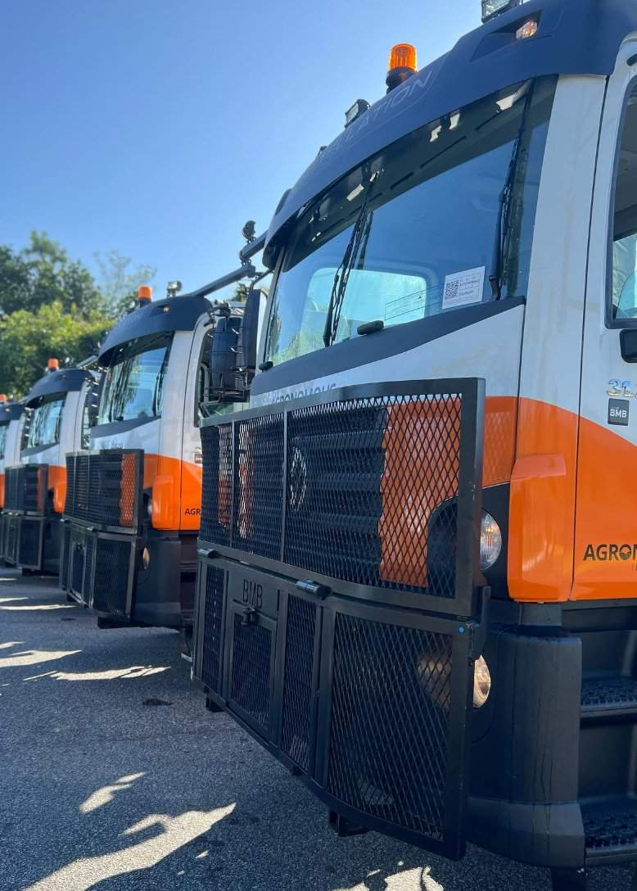
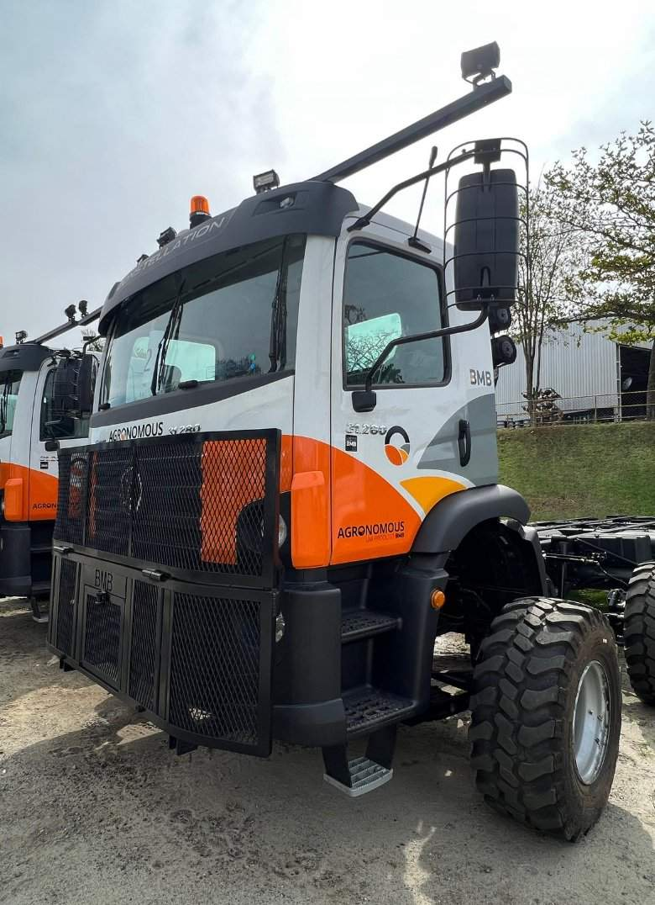
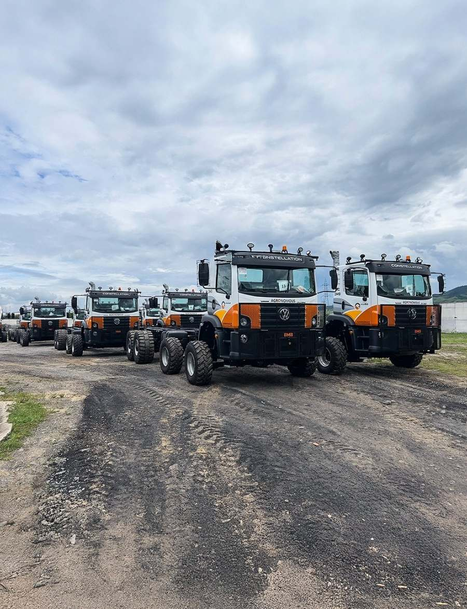
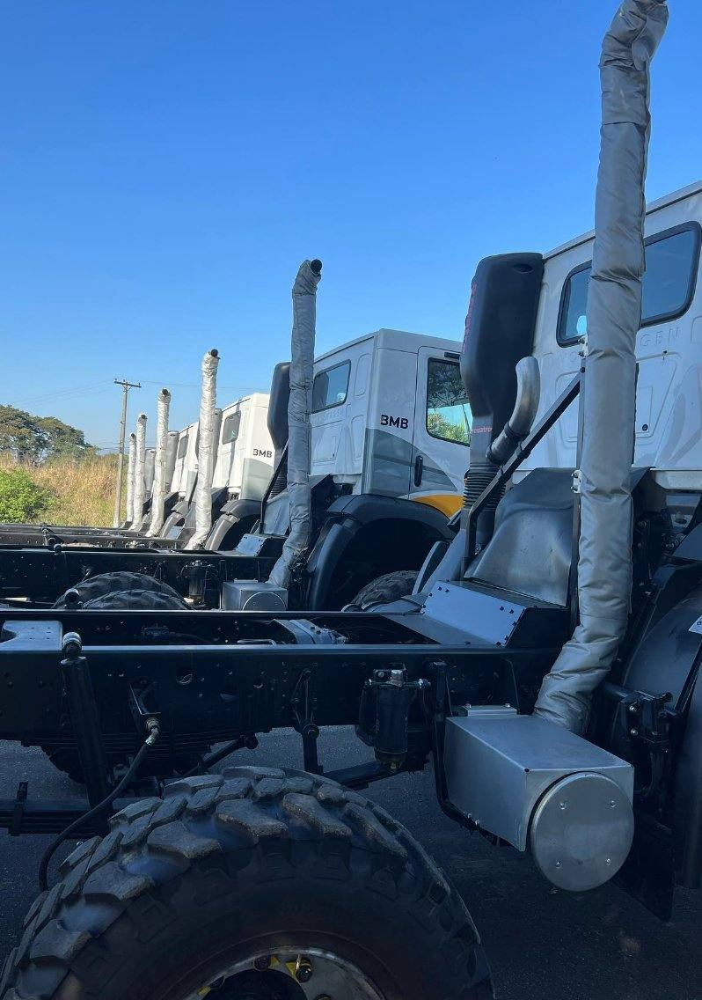
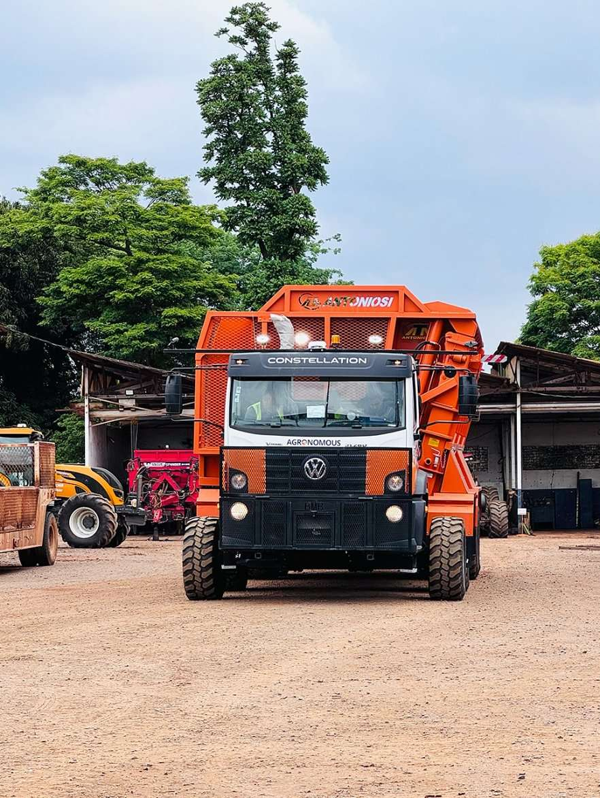
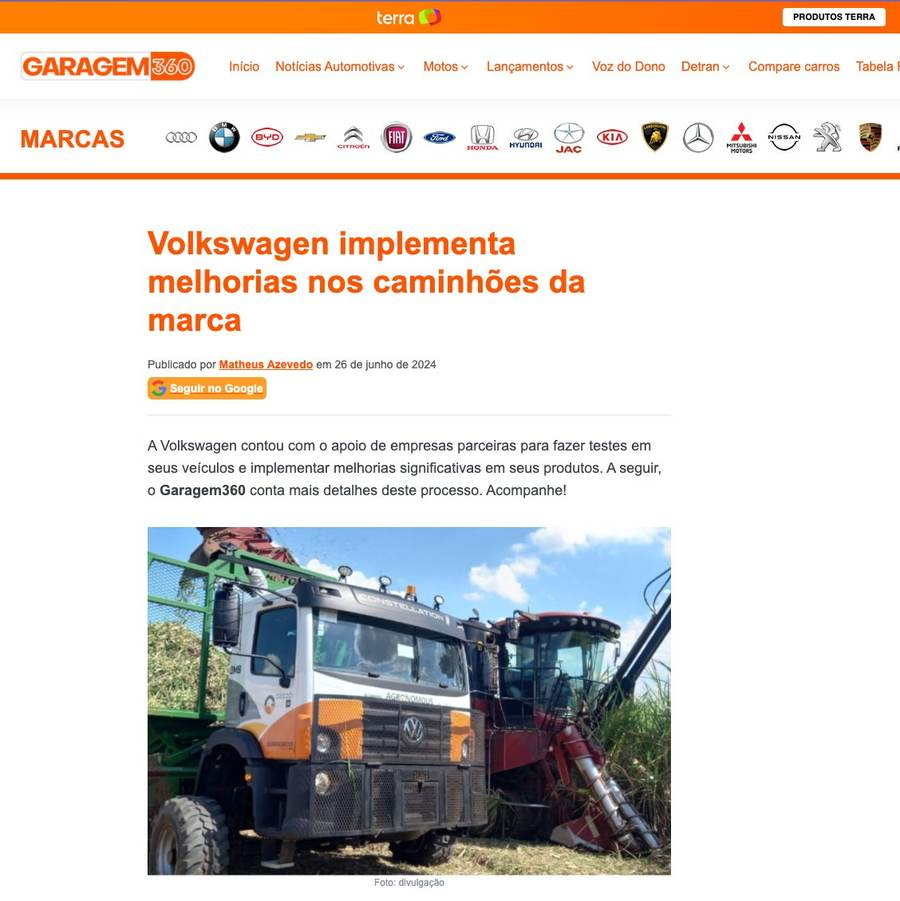
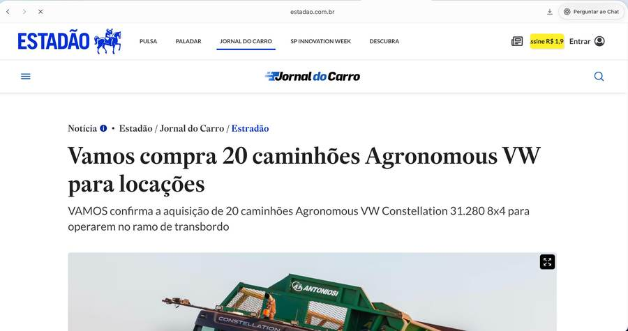

Responsáveis pelo design visual do Volkswagen Constellation 31.280 Agronomous, em parceria entre Volkswagen e BMB. Um caminhão desenvolvido e testado no Brasil, pensado para a operação pesada do agronegócio, com 20 unidades fornecidas ao Grupo VAMOS para atuar no transbordo da safra de cana-de-açúcar.
O desafio e a solução
O Constellation Agronomous é o resultado da parceria entre Volkswagen e BMB para atender uma demanda específica do agronegócio brasileiro. Equipado com direção eletricamente assistida e sistemas avançados, é um veículo pensado para condições extremas: terreno acidentado, operação contínua e cargas pesadas no transbordo de cana.
Nosso trabalho foi traduzir essa robustez em linguagem visual: a aplicação gráfica da carenagem, a presença das marcas Volkswagen, BMB e Agronomous na lateral e dianteira, e o desdobramento da identidade para uma frota inteira de 20 unidades destinadas ao Grupo VAMOS.





Repercussão
A entrega da frota ao Grupo VAMOS foi noticiada por veículos como Estadão e Garagem360, reforçando a relevância do projeto no setor automotivo e do agronegócio.

Estadão

Garagem360
Resultado
A frota de 20 unidades do Constellation Agronomous foi entregue ao Grupo VAMOS com identidade visual coesa, robusta e alinhada às três marcas envolvidas. Um projeto que une engenharia automotiva pesada com design industrial aplicado em escala, servindo a operações reais no campo brasileiro.